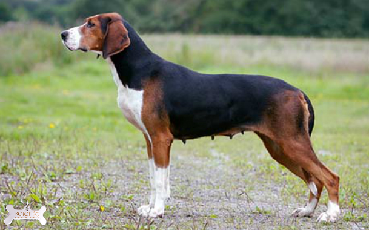

Внешний вид
Финская гончая — сильная, но не тяжёлая собака несколько удлинённого формата. Голова красивая, пропорциональная, морда довольно длинная. Глаза овальные, тёмные, спокойные, вертикальная борозда между глазами отчётливо видна. Примечательные уши длинные, в нижней части завернутые внутрь, чем-то напоминают крылья. Хвост длинный, посажен низко, никогда не поднимается выше уровня спины. Лапы собранные и плотные, между подушечками растёт шерсть, которая защищает лапы от порезов льдом